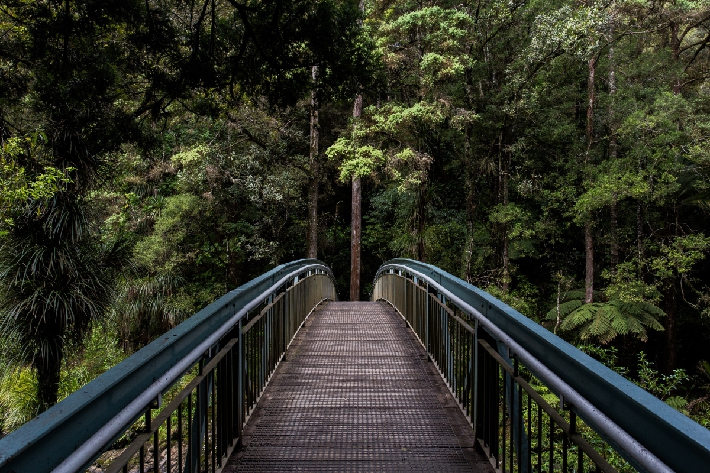

Introduction
Ever wanted to go on an adventure outdoors but don’t know where to begin? This web app assist and guide people as they begin their first hike and track their progress in future hikes. Hiking is a great way for one to connect with and enjoy nature around them. This web app will get you ready to go on your trail adventure, letting you know what equiptment people usually need for what trail.
Hiking is a great way to get exercise and is a calming experience that could be done alone or with some friends
